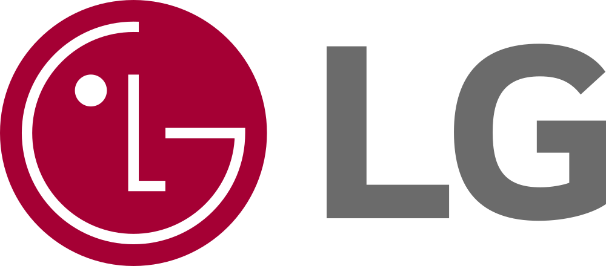

QA 프로세스 및 업무 개선에 주도적으로 참여하고 있으며, 카카오 광고사업부문 유닛 리더로서 QA 일정·리소스 할당, 협력업체 관리, 유관부서 협의, OKR 선정 및 관리를 통해 체계적인 품질 보증 업무를 수행하고 있습니다.
카카오모먼트 BAT 자동화 프로세스 도입, Open API 테스트 프로세스 구축, 카카오 오픈 프로세스 수립, AI 활용 QA 도구 개발 등 지속적인 업무 혁신에 기여하고 있습니다. LG전자 9년(21개 프로젝트·70여개 모델)과 카카오 7년 이상의 서비스 QA 경험을 보유하고 있으며, 글로벌 검증 조직 교육(한국·미국·인도·이스라엘) 및 해외 출장(11회)을 통한 글로벌 커뮤니케이션 역량도 갖추고 있습니다.
광고사업부문 유닛 리더 / QA 매니저 / 구글 모바일스토어 관리 / 1차 인터뷰어

신규 모델 SW QA 기획 및 관리 — 21개 프로젝트 / 70여개 모델 (LG G6, Nexus4 등)
QA 업무에 대한 기술·경험·역량을 기반으로 매니징, 엔지니어링, 테스팅 측면의 지속적인 개선으로 테스트 커버리지 확대를 도모합니다. 유닛 리더로서 서비스별 적합한 테스트 방법론을 발굴·적용하여 품질 강화 활동에 기여합니다.
QA 프로세스를 기반으로 프로젝트 시작부터 끝까지 주도적으로 리딩하고 가이드를 제공함으로써 품질 안정화 수준을 높입니다. 신기술 도입과 프로세스 개선을 동료들과 함께 지속적으로 추진합니다.
시니어·주니어 동료들과 협업하며 QA에 적용 가능한 신기술을 지속적으로 발굴합니다. 유관부서와의 유기적인 상호 작용으로 서비스 품질 향상을 도모하고, 동시복합적으로 발생하는 QA 과제에 대해 스케줄링과 리소스 분배를 효율적으로 해결합니다.
인터뷰어로서 부서에 필요한 인재를 지속적으로 발굴·영입하고, 질문·커뮤니케이션·인터뷰 역량을 강화하여 최적의 인재 영입에 기여합니다. 지식과 기술을 공유·전파함으로써 동료들과 함께 성장하는 문화를 이어갑니다.